Segmentos
Segmentos
Construtoras e incorporadoras
Aço, cimento e fechamento com prazo previsível para o cronograma da obra.
Fale conosco

Uma das unidades com o portfólio mais amplo do Grupo Vocical. Do cimento ao drywall, com serviços especializados e logística regional para obras, indústrias e serralherias.
.png)
A Robracon Rondonópolis foi constituída em 2004 e iniciou suas atividades em 2005, para aproximar lojistas, obras e grandes indústrias do setor da construção.
Hoje atende construção civil, indústrias, serralherias, estruturas metálicas, agronegócio e sistemas drywall, reunindo produtos, serviços e soluções voltadas para produtividade, organização e desempenho.
Segmentos
Aço, cimento e fechamento com prazo previsível para o cronograma da obra.
Fale conosco Segmentos
Segmentos
Perfis, chapas, tubos e corte e dobra sob medida para a produção do dia a dia.
Fale conosco Segmentos
Segmentos
Aço, chapas e telhas em volume para galpões, linhas de produção e manutenção.
Fale conosco Segmentos
Segmentos
Linha completa de drywall: placas, perfis e acessórios com pronta entrega.
Fale conosco Segmentos
Segmentos
 Segmentos
Segmentos
Cinco linhas completas para a base, a estrutura, a cobertura e o fechamento da obra. A disponibilidade pode variar por estoque.
Cimento, cal, argamassa, gesso e rejunte.
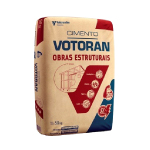
Aditivos para chapisco e argamassa, mantas líquidas e emulsões asfálticas.
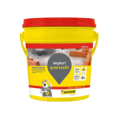
Tubos soldáveis e de esgoto, joelhos, curvas, registros e adesivos para PVC.
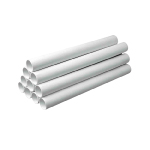
Caixas d'água, tanques, cisternas e acessórios em diferentes capacidades.
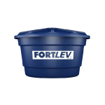
Assentos, caixas acopladas, lavatórios, cubas e tanques.
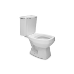
Barras de 12 m em CA50 e CA60, nas principais bitolas.
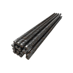
Treliças H8 e H12 para estruturas pré-moldadas e reforço de lajes.
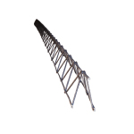
Malhas EQ leves a pesadas para lajes, pisos e contrapisos.
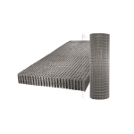
Colunas prontas de 6 m com estribos, produção sob medida conforme o projeto.
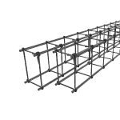
Malha POP, arames recozidos, torcidos e galvanizados em diversos diâmetros.
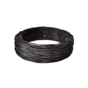
Tubos metalon, cantoneiras, perfis, guias e barras chatas.
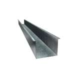
Perfis U, Z, T e L, além de perfis para esquadrias.
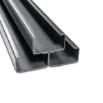
Chapas lisas, galvanizadas e xadrez para estruturas, pisos e reforços.
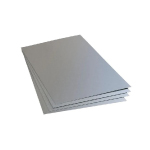
Bobinas galvalume e galvanizadas para calhas, painéis e perfis leves.
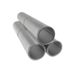
Trapezoidal e ondulada, com cumeeiras, rufos, arremates e fixadores.
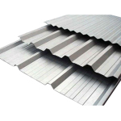
Tipo sanduíche com núcleo isolante, para conforto térmico e acústico.
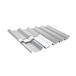
Onduladas para uso residencial, comercial e rural, com acessórios.
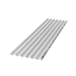
Policarbonato, fibra de vidro ou PVC translúcido para entrada de luz.
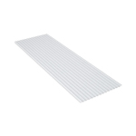
Placa standard para uso geral em ambientes secos.
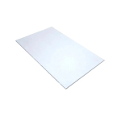
Resistente à umidade e Glasroc X para fachadas e áreas externas.
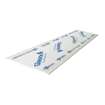
Guias e montantes metálicos para paredes e forros, com prumo preciso.
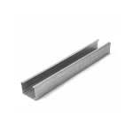
Massa, fita telada, parafusos, cantoneiras, presilhas e reguladores.
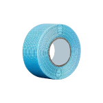
Treliças e telas soldadas são produtos prontos, distribuídos pela unidade. A disponibilidade de itens pode variar por estoque.

Perfis U, C e Z, terças, reforços e peças com dobras personalizadas, prontas para solda ou montagem. Precisão dimensional e menos retrabalho no canteiro.
Cobertura produzida no comprimento do projeto, com menos emendas, montagem mais rápida e conforto térmico e acústico para galpões e centros logísticos.
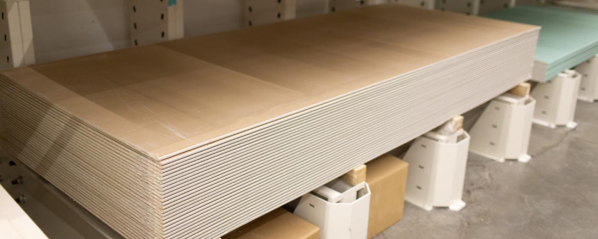
Fornecimento completo de drywall: placas ST, RU e Glasroc X, guias, montantes, perfil F530 e todos os acessórios de montagem e acabamento.
Construção, aço, estruturais, coberturas e drywall reunidos numa única unidade.
A linha de drywall exclusiva do grupo: placas ST, RU e Glasroc, perfis e acessórios.
Chapas e coberturas produzidas conforme o projeto, com precisão e menos desperdício.
Estrutura para entrega em Rondonópolis e região, com atendimento consultivo B2B.
.png)
.png)
.png)
.png)

Atende Rondonópolis e cidades do entorno, com estrutura logística para entrega regional de materiais e das peças produzidas sob medida.
Frota própria conforme a disponibilidade da unidade.
Apoio no quantitativo, alternativas de produto e orçamento técnico rápido para lojistas, construtoras, indústrias e órgãos públicos. Entrega programada conforme o cronograma da obra.
A Robracon Rondonópolis fornece vergalhões, colunas, treliças, tela soldada e malha POP para obras de todos os portes em Rondonópolis e região. Fale com o comercial para orçamento.
Sim. É a unidade do grupo com a linha completa de drywall: placas ST, RU e Glasroc X, perfis, guias, montantes e acessórios.
Sim. Produzimos telhas metálicas e termoacústicas em comprimentos personalizados, conforme o projeto, para galpões, comércios, indústrias e centros logísticos.
Sim. Além do material de construção, oferecemos corte e dobra de chapas, perfis, tubos, chapas e componentes metálicos para serralherias, metalúrgicas e manutenção industrial.
Sim. O atendimento é consultivo e preparado para B2B: lojistas, construtoras, indústrias e órgãos públicos, com apoio no quantitativo e entrega programada.
Precisa de material ou de um orçamento para a obra? O time da unidade responde rápido e com atendimento consultivo.
Pedir orçamentoROBRACON RONDONÓPOLIS BRASIL MATERIAIS P/ CONSTRUÇÃO LTDA · CNPJ 06.937.383/0001-05 · Unidade do Grupo Vocical.
Fale com o time da Robracon Rondonópolis e receba atendimento consultivo e resposta ágil.
Fale Conosco